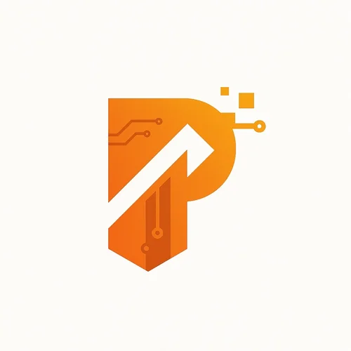
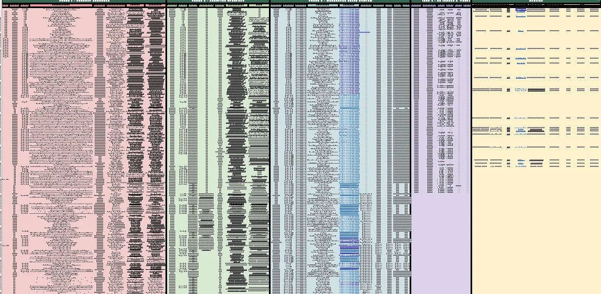
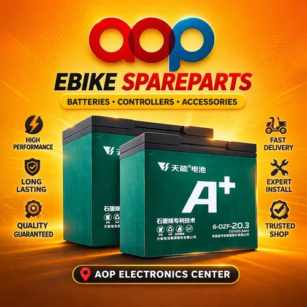
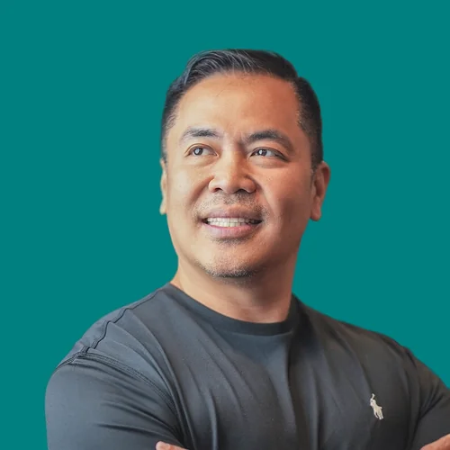
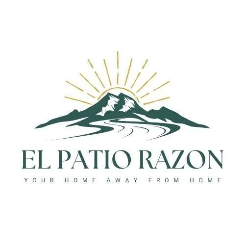
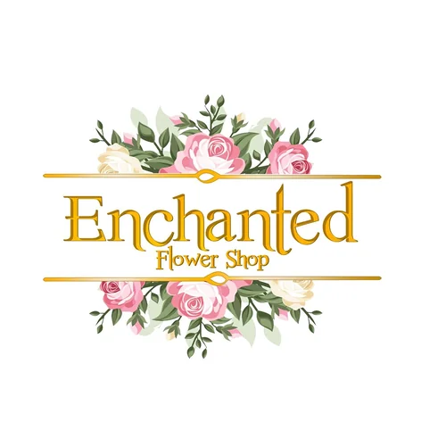

DIGITAL MARKETING · PAID ACQUISITION · OPERATIONS
I connect campaigns, creatives and systems to business outcomes.
I'm Karl Cometa, a Philippines-based marketing specialist working across Meta Ads, creative strategy, conversion funnels, lead follow-up and performance reporting. My experience spans SaaS, e-commerce, Australian real estate and local service businesses.
SELECTED WORK RESULTS
Outcomes with context.
These figures summarize selected projects and reporting records, not isolated claims of personal attribution.
Attribution: E-commerce revenue and orders were reported across selected team-supported campaigns, not individually generated by me. AOP engagements and qualified leads are CRM activity metrics, not closed sales. Results and source records are described in the case studies below.
WHAT I WORK ON
Marketing skills that work together.
From the first ad impression to lead qualification, conversion measurement and an actionable weekly report.
Paid Acquisition
Meta Ads Manager, audience and offer testing, creative angles, copy, lead-generation campaigns and ad-performance review.
Creative Strategy
Canva design, CapCut edits, video hooks, direct-response messages and organic/social campaign content.
Funnels & CRM
Landing page collaboration, Messenger lead qualification, follow-up flows, demo-booking journeys and lead tracking.
Reporting & AI
GA4, PostHog, Meta Pixel/CAPI coordination, Google Sheets dashboards, ChatGPT and Claude-assisted research and workflows.
SELECTED CASE STUDIES
Recent work & documented projects.
Each case explains the business problem, my contribution, and what can reasonably be measured. Confidential client data is not reproduced.
01 SAAS · CUSTOMER ACQUISITION
Next Wave Marketing
Meta Ads, landing-page journeys and subscription acquisition for Sidecar Chatter.
Business challenge
Link creative testing and paid social traffic to meaningful SaaS outcomes, including landing-page engagement, demo interest and subscriptions.
My contributions
- Created ad concepts, messaging, campaign creative and video sales letter edits.
- Supported page improvements and subscription/demo journeys.
- Worked with developers to troubleshoot Meta Pixel/CAPI, GA4 and PostHog event tracking.
- Reconciled campaign activity, follow-up and subscription funnel reporting.
What was produced
Paid social campaign and creative testingLanding-page & demo journey supportEvent-measurement issue identificationRecurring campaign reporting
Performance screenshots and detailed subscription data are omitted pending client approval. This section documents responsibilities and deliverables, not an invented ROI claim.
ILLUSTRATIVE WORKFLOW · NOT AN INTERNAL CLIENT DASHBOARD
01Audience + offer + creative angles
02Meta campaigns + landing-page journey
03Lead/demo/subscription measurement
04Reporting + conversion improvements
Workflow reconstructed at a high level from the role. No proprietary documents, client dashboards or personal data are embedded.
02 AUSTRALIAN REAL ESTATE · SOCIAL + EMAIL
Wingman Group
Marketing administration for Ray White Wetherill Park.
Business challenge
Keep property listings, agent promotion and marketing requests consistent while supporting a busy office with approvals, reporting and multiple channels.
My contributions
- Produced property, rental, auction and agent-branding content.
- Prepared short-form social assets and email marketing collateral.
- Coordinated posting requests, feedback and approvals.
- Built AI-assisted social reporting across 13 office/agent account-platform entries.
Documented scope
13 reporting account-platform entriesWeekly baseline and comparison reportingProperty & agent-branding creativesEmail and publishing coordination
The figure of 13 refers to reporting entries, not 13 unique clients or accounts. Actual campaign screenshots can be provided only where sharing is permitted.
MARKETING OPERATIONS · REPRESENTATIVE PROCESS
01Listing / agent content intake
02Creative and copy production
03Approval, scheduling and email support
04Performance review and data-quality checks
Representative workflow, not a screenshot of employer software.
03 E-COMMERCE · CREATIVE OPERATIONS

PROHUB Ecommerce Solutions
High-volume campaign creative production, product testing and performance tracking.
Business challenge
Coordinate a large pipeline of product launches, creative assets, testing records, and team communication so teams could identify winners and stop underperforming tests.
My contributions
- Produced and coordinated creative assets for 100+ product campaigns.
- Maintained product launch, campaign, status and funding trackers.
- Reviewed ad spending, sales, orders and campaign trends in team records.
- Coordinated across research, graphic design, video, copy and campaign execution.
Selected team-campaign records
100+ product campaigns supported₱32.7M+ selected campaign gross sales60K+ recorded ordersProduct, funding and performance trackers
Attribution note: Revenue and order totals reflect selected campaigns supported by multiple team members; they are not individual sales claims.

Selected images already published in the existing portfolio. Review each screenshot for private information before forwarding.
04 LOCAL LEAD GENERATION · META ADS

AOP Electronics Center
Local e-bike battery offers, Messenger inquiries, qualification and follow-up.
Business challenge
Generate relevant local inquiries in a price-sensitive market, clarify service-area eligibility and improve follow-up without losing sight of actual sales.
My contributions
- Managed Meta campaign creative and local offer messaging.
- Positioned home service, warranty and installation value.
- Built Messenger qualification, objection-handling and follow-up scripts.
- Worked with CSR records to separate qualified inquiries from low-fit leads.
Selected records
361 engagements · Oct 27–Nov 630 qualified leads in that period2 service reservations in the report7-day period: ₱18,336 sales / ₱2,091 ad spend
Measurement note: The seven-day sales and ad-spend numbers are contemporaneous business records, not verified ad-attributed ROAS. The Oct 27–Nov 6 report confirmed no new-inquiry sales, despite qualifying 30 leads.
RECRUITER EVIDENCE
See how I work—not only what I claim.
Concrete creative examples, project artifacts and campaign-report excerpts help connect responsibilities to measurable work.
Ad & social creatives
Product creatives, local service offers, resort social content and promotional campaign examples.
Browse creatives →Performance & trackers
Selected PROHUB product and operations screenshots, alongside AOP campaign/CRM tracking materials already published.
See campaign case studies →Funnel & CRM systems
Examples of the steps I support: lead qualification, response flows, follow-up, reporting, review and optimization.
See operations →Some recent projects are subject to client confidentiality. The workflow diagrams shown here are illustrative rather than screenshots of internal systems. Detailed client dashboards, ad account access and proprietary reports are not publicly shared without permission. Historical figures are included with attribution and period context to avoid confusing inquiry volume, business sales and platform-attributed ad conversions.
ADDITIONAL WORK
Content, operations & community-facing brands.
Complementary experience in personal-brand support, tourism, retail and creative content.

MARKETING OPERATIONSTransformational Coach Russ Juson
Executive support · Jun 2024–Mar 2025
- Calendar and communication follow-up
- Content production support
- Workflow organization and planning

HOSPITALITY & SOCIALEl Patio Razon
Social Media Manager · Oct 2023–Feb 2025
- Creative promotional content
- Resort branding and offers
- Social media publishing support

LOCAL RETAILEnchanted Flower Shop
Social Media Manager · Jun 2023–Jun 2024
- Social content and seasonal campaigns
- Promotional creative development
- Local audience positioning
CREATIVE GALLERY
Selected work samples.
Click a sample for a closer view. The examples are from existing public portfolio assets.
Creative ownership and performance attribution vary by campaign. Private client data should be redacted in any screenshot provided to recruiters.
MARKETING SYSTEMS
Repeatable execution over isolated tasks.
These are the operating tools and workflows I have built, maintained or supported for campaigns and client teams.
LET'S TALK
Looking for a marketer who connects execution with outcomes?
Open to remote roles and selected projects involving paid acquisition, creative strategy, campaign reporting, marketing administration and growth operations.